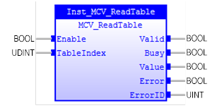

Reads a specified TABLE variable value.

MCV_ReadTable is used to read a TABLE variable value specified by ‘TableIndex’ input parameter.
MCV_ReadTable does not affect PLCopen state diagram.
Make sure the input and output parameters are of data type indicated in the table below.
Please refer to TrioBasic Help for more information.
|
Name |
Data Type |
Description |
|
INPUTS |
||
|
Enable |
BOOL |
Enable execution. |
|
TableIndex |
UINT |
Table index |
|
OUTPUTS |
||
|
Valid |
BOOL |
A valid output is available on the output ‘Value’ |
|
Busy |
BOOL |
The FB new output values are to be expected |
|
Value |
LREAL |
Value or TABLE variable being read |
|
Error |
BOOL |
Signals that an error has occurred within the FB |
|
ErrorID |
UINT |
Error identification |